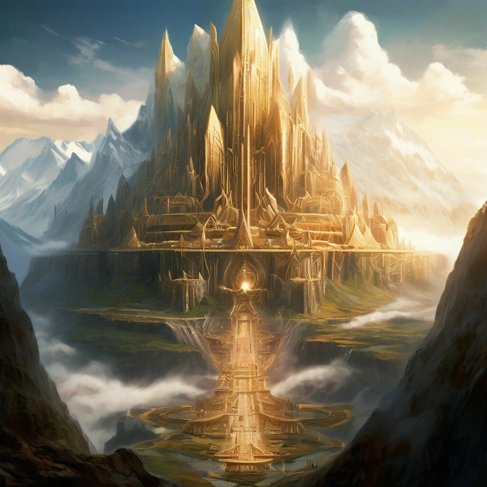

Асгард
Асгард – пристанище асов – верховных богов в германо-скандинавской мифологии, крепость в самом центре вселенной, расположен на самой вершине Иггдрасиля (звучит как-то противоречиво, но так гласит Высокий в "Младшей Эдде". Также в его речи упоминалось, что асы называют его "Троя").
Крепость была построена для защиты во время войны с ванами, однако сейчас высокие защитные стены носят больше декоративный характер, так как они в любом случае будут разрушены, когда наступит Рагнарёк.
Есть в Асгарде место Хлидскьяльв. Когда Один восседал там на престоле, видел он все миры и все дела людские, и была ему ведома суть всего видимого. Кроме того, подле этого престола расположены двенадцать тронов для двенадцати жрецов Асгарда. Известный исландский скальд Снорри Стурлусон в произведении "Круг земной" упоминает, что Асгард возведён к востоку от реки Танаквисль (данное название является осмыслением латинского названия реки Дон. И тут появляется два возможных толкования этому: либо по мнению скандинавов Асгард располагался к востоку от реки Дон, что является современным югом России, либо здесь имеется в виду, что он расположен где-то в Азии, так как Дон считался границей, разделяющей Европу и Азию, выражение "к востоку от Дона" могло обощначать всю Азию в целом, а не только прибрежные территории).